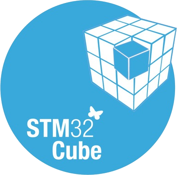

Présentation
Durant mon alternance chez RFIDEES, j’ai mené plusieurs projets aux enjeux techniques forts. Chaque mission dispose maintenant de sa propre page afin de présenter clairement son contexte, ses objectifs et les compétences mobilisées.
Application de test CEM
Pilotage d'un analyseur de signaux et traitement des mesures selon les normes CEM.
Voir le projetTests de lecteurs UHF
Procédure de validation, application de test et recherche d'une configuration de référence.
Voir le projetReconception d'un automate de coloration
Analyse de l'existant et développement embarqué autour d'un microcontrôleur STM32.
Voir le projetCompétences développées
- Développement bas niveau sur STM32H753ZI (bus SPI, UART, I2C)
- Conception d’IHM interactive (Windev) pour l’analyse CEM
- Utilisation d’oscilloscopes et Wireshark pour l’analyse des trames
- Lecture et compréhension de schémas électroniques
- Travail en binôme sur la conception hardware et firmware
Perspectives
Cette alternance m’a permis d’aborder des domaines techniques variés, de renforcer mes compétences en développement embarqué, et de mieux comprendre les enjeux du monde industriel. Je poursuis désormais mon parcours en cycle ingénieur en alternance, avec l’ambition de participer à de nouveaux projets innovants.
Membres
- 1 BUT3 parcours A
Compétences techniques
C
Windev

STM32Cube
Bilan général
La difficulté résidait dans la prise en main et la compréhension de l'analyseur de signaux et la compréhension des notions d'électronique, car je partais de zéro sans connaître la machine ni le protocole de communication utilisé. mais aussi car le développement embarqué implique des notions d'électronique. J'ai réussi à mener à bien les recherches nécessaires pour découvrir progressivement les normes de CEM et comprendre les bus de communications du projet.